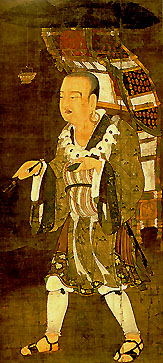
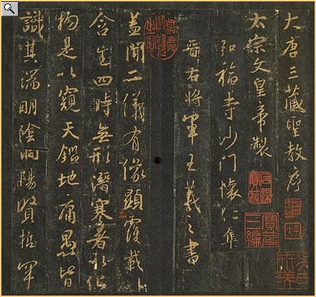
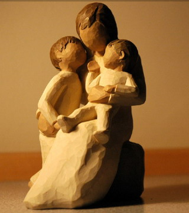
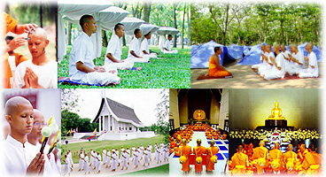

“学佛须否出家”面面观
冯冯
迷失在未来. / .誊录
这一类的来信，今年有陡然大增之势，来信者以青年人为大多数，尤以学生为多，其次以家庭妇女为多。在性别方面，则以妇女占最多人数。以地区而论，则以台湾来信问出家的最多，美加华侨其次，华侨之中，又以台湾女子为多。
常常有人来信问很多奇奇怪怪的问题，例如：学佛应不应该出家，需不需要出家，必须出家才可修行吗？修行必须出家才可修成正果吗？趁着年轻出家好呢？还是到年老出家好？应该放弃学业去出家吗？应该放弃职业或事业去出家吗？应该抛弃家庭去出家吗？
这个统计，反映出一个现象，就是现在愈来愈多人信佛学佛，也愈来愈多人向往出家，尤其是在台湾社会，向往出家修行，似乎已经蔚然成为时尚风气。
继之而兴起的出家风气，发生的地点却是中国大陆，也有很多青年学子出家，不少人来信问我出家好不好？
从社会的经济状况来看，台湾是一个经济成长的富庶社会，工商发达，教育普及，国民生活水准已经超逾美加。几十年前，人人羡慕美国人有钱，风水轮流转，如今是全世界都羡慕台湾人有钱，生活消费高，享受一流，大陆则未能企及台湾，但亦正在渐渐成长，发展比一般第三世界国家好了不知多少倍。
为何台湾与大陆愈来愈多人想放弃学业事业前途与家庭去出家？并且蔚为风气？而几十年前，在贫穷挣扎中的社会，反而很少人要出家修行。这是相当令人不解的一个问题。
从一个方向来看，可能是：物质生活愈丰富，精神生活却愈来愈贫乏，所以有很多人想出家修行来充实精神上、心灵上的空虚。
从另一个角度来看，多人希望出家修行，乃是佛教德积数十年来的辛勤播种广传佛法的成就，把学佛修行与佛法的真理甘露遍洒了人间。现在已经开出茁壮蓬勃的花朵结成了接引的果实。可喜可贺。
又从另一个角度来看，佛教虽然已经很蓬勃，成为一支中流砥柱的宗教与道德支柱，却并不是人人有佛缘，也不是全民皆佛徒。非信仰佛教的人，恐怕也仍然占社会人口的大部分。对于佛教鼓吹出家修行，不免会产生反感，视之为迷信盲从。
从佛教信仰来看，出家是一个人生的最高理想目标，放下一切名利，一切物质生活享受，无牵无挂，念佛诵经，济度众生，弘法度迷，慈悲喜拾，接引彼岸，永了生死轮回，成佛证果。
 但是从非信佛的人来看，出家是逃避现实，不负生产责任，成为社会的负担，甚至还有人指责出家人是寄生虫。固然这都是世俗人的世俗之见，但是，世俗人未识佛法，怎知真谛？自然只能以世俗之见来抨击出家人。
很不幸地，也的确并非每一位出家人的出家动机都是纯正的正信，抱着弘法利众的悲愿而出家，其中也有因为消极而逃避现实的，也有贾宝玉式的因失恋而出家，也不免有些人是为了个人利益而出家，并未把出家作为修行的理想，只是图谋供养或发展个人的名利。尽管这一类只是少数，却已是“一粒老鼠屎弄臭一锅汤”，世俗人见到一万个正信正修出家人也不感动，但只见到一个失德的出家人就会嘲骂全体出家人，却未想到，任何团体，人多了，都有良莠不齐的现象，世人每每因见某些假借宗教而牟利自肥的情形，就以偏概全，这是人之常情。
古代出家须经很苛严的考验，著名的唐代玄奘三藏法师十二岁出家，也须经过多场考试与考核，才获准出家，并非今时那么容易。唐代出家须经官方考试，宋代以后就渐渐废弛，但也仍然规定观察三年才准为僧受具足戒。如今时代，虽然有严格的山门，但也有不少“即食文化”的出家，甚至有“自封”的出家与自封的名号，以至良莠不齐情形每况愈下，品流复杂，往往有鱼目混珠之嫌，大大损坏了正信正行的出家人的形象。正邪难分，世俗人只从外表观察，哪知真伪正邪？世俗人一般心目中只知求财求福求子求禄求平安，很少人会用心去研究正信的佛法，更不会识别谁是真正的正信出家人，见庙就拜，见僧袍就拜，见偶像就跪。而另一些世俗人则只从这些表相来大骂佛教，更有外教的人以其偏狭之心来谰言毁谤佛教。只见他人之短而不见知自身的缺点！
 从世俗人另一个角度来看，社会的文明、文化、经济……，一切都是重要的，互相支持关联的，每一个人都有其用处，各有对社会的贡献，每一行业人才都是国家社会的重要份子，都是必须的螺丝钉。少了农人，没人种田，社会没饭吃；少了技工，工厂无法生产工具与机器商品；没有商人，谁去推动贸易行销？学机械的，学电脑的，学工程，学医学，学法律，学语文……种种不同的人才分工合作，才可推动社会的繁荣，民生的改善，国家的富强，社会的安定，人类的生存与繁衍。
出家人弘法利众，也是社会人才的一环，对于净化人心维护道德，自有其伟大的贡献。不幸地，从世俗人的观点来看，出家人只是念佛诵经，不事生产，只是逃避现实，对于社会毫无贡献。有人说，看！某某人大学毕业，留美回国，不去做所学的电脑工程师，却跑去出家念佛诵经，那么多年的教育，多可惜！看，某小姐大学千辛万苦才考进，却放弃了教育，跑去出家青灯木鱼过日子，多可惜！某人留美学的是核子物理系，却跑去出家，多可惜！
可不能说这些世俗之见不正确，的确是很可惜，所学非所用，好不容易造就的特殊人才，放弃了本行，跑去出家，社会的大机器，又少了几颗重要的螺丝钉，这是社会的重大损失。这是无可否认的事实。
但是，假如说，这些人才出家，等于是做了教授教师，去教育社会，那么说，就是失诸东，收之西，教育也是很重要的一环。正信的出家人以正法正信正行正念正思惟正言等等为教，以身作则为教，则又何异于教授教师？换言之，科学家也并非人人从事研究工作，也有些做教师的呀！
基本上，我认为出家人对社会具有非常重要伟大的教育使命，从弘扬佛法之中，教育了社会，维护了道德，也发扬了慈悲的佛法精神。假如有谁能考虑到放弃自己的一场学业事业与前途幸福，放弃家庭，而去认真严肃出家，作为实践佛法慈悲理想，这是值得赞叹的。
不过，倘若有谁只是为了失恋而出家，或为了做人做自了汉而出家，那么不纯正的动机的出家，就不是可称赞的事。
听说有些少数人要出家只是为了出国方便，及赴美国移民方便，因为美国移民法优待宗教传教人士，不列入优先顺序，随时可以批准。事实上，我也曾见过有人在大陆向一些老年僧人收买戒牒，从羊肉馆厨师摇身一变为法师成功移民美国，照旧开涮羊肉馆子发财，也见过有人在台湾出了家，利用美国移民方便，上了岸就脱下海青，接取妻儿来美国团聚……。像这些例子，不胜枚举，但毕竟仍居少数，不能以偏概全，可是这些人的行为已经使正信出家人受到了不利影响，自不待言。
也有人是向往出家人的修行生活悠闲，以为都似王维的诗句那么逍遥。假如以此心态去出家，那就等于小男孩梦想航海的快乐而想去做水手。出家的生活与工作其实一点都不悠闲，披上袈裟事更多哪！
 倘若有人认为必须抛弃父母妻子兄弟姊妹儿女这些尘缘无牵无挂，而跑去出家，却又自以为是可以成佛，又以为自己出家去弘法度众，不受牵挂。这种动机，也颇为可疑。到底是否真正开悟？试问：一个人对自己的父母都不孝敬都不爱，对自己的妻子儿女也不爱，狠心斩断亲情，却侈言弘法利众对众生慈悲？你对众生慈悲再大，却为何对你自己的父母妻儿骨肉不慈悲？你要侈言济度众生，为何却要斩断自己的父母与妻儿骨肉？就有一位男士，抛弃他出生只有一天的儿子与四岁的女儿，更别说太太，他跑去出家了，让失业贫病的太太独立抚养两儿，他说儿子都是“讨债鬼”，怎么也不听我劝告他回家，问他为何出家，他说要“济度众生”，或者他将来也能成佛作祖。但是，他所谓“修行”是建立于妻儿的痛苦眼泪之上的，依我看，他是在作恶业（使妻子儿女痛苦）多于修行哉！
佛陀在世出家苦行七年，观明星而开悟，放弃苦修，成道后率妻子耶输陀罗与儿子罗侯罗同往外地同修，后来又度父王母后同修，可见出家并无须抛弃父母妻儿，日本有些宗教准许和尚在寺内与妻子儿女同往，一同生活可能也有其道理，应该算是合乎人道的制度，卫道之士抨击为犯淫戒，这是另一个问题，下次另谈吧！
至于各方来信所问应否辍学弃业出家等等问题，我的答覆是个人自主，我不能越俎代庖来代他人决定，因为个人情况不同，因缘不同，志趣各异，动机也有别。
拿我自己来说，我是个信佛学佛的人，但我绝不会抛弃我的年迈慈母不予供养照料而跑去出家，我自己觉得我做个在家的学佛人已经很满足，我没有什么弘法利众的大志，也谈不到是孝，佛陀也曾讲过“父母恩重难报经”，并没教人抛弃母亲去出家。至于教人“辞亲割爱”才可出家，我怕是后世弟子的观念，我认为很不合理，很不人道，试想一想，我若出家去了，谁来照料我母亲？我出家去了，让我母亲日夜哭泣思念我？让她无衣无食，无依无靠？倘若我能弘法利众，这样也未免对母亲太残酷了吧？我为什么时候要把我的出家理想建在母亲的痛苦上面？连对自己的母亲都无情，还讲什么修行呢？讲什么对众生慈悲？
我也不愿见到“全民皆修”，太虚大师的佛学与诗词学问举世同钦，但他曾主张全国四万万五千万同胞都人人出家，我却不敢苟同！全民出家，岂非中华民族绝种了，无众生何来的佛？假若他主张的只是“短期出家”，像泰国方式做，或是像台湾现在的一些七天至十天“出家班”，领受一下佛法，那就值得推荐。
 可能我的思想还是受孔子儒家的影响较深吧？我还是拥护儒家的“诚意正心修身齐家”观念，我觉得家庭伦常是很重要的，是尽到社会安定和平的重要关键之一，倘若全国人人都出了家，都不要家庭，“全民皆僧”又与“全民皆兵”有何分别？
信笔至此，又想起有些法师很热心劝人出家，有一位已故的高僧，当年的轶事是，见了谁都说：“你前世是一个和尚，佛缘很深，今世应该出家继续再修！”那么说，人人都前世是出家人。当他不喜欢谁，他就说；“你前世是个杀猪的屠夫，做了太多恶业！”听久了，听多了，猴子就说；“同一个来人，去年您说他前生是和尚，今年他怎又变杀猪的呢？”老法师拿了纸扇子照实打骂：“你这个猴子真坏！”
说人“前生是出家人”，这话您听着也不新鲜吧？不少人还是拿这句老套来劝人出家哪！
图片出处
荷花：网贴
樱花：网贴
原载《佛乘世界》第3期：1997年6月11日